A multi-dimensional adaptive sampling algorithm and its application to Fermi surfaces
Jorn Hoofwijk
4396499
Supervisors
Dr. Anton Akhmerov
Dr. ir. Dennis den Ouden-van der Horst
Committee
Dr. Michael Wimmer
Dr. ir. Wolter Groenevelt
Outline
A multi-dimensional adaptive sampling algorithm and its application to Fermi surfaces
- Adaptive sampling algorithm
- Multi-dimensional
- Prioritising curvature
- Band structures & Fermi surfaces
Solution: Adaptive sampling
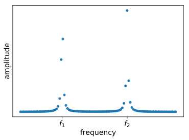
Homogeneous
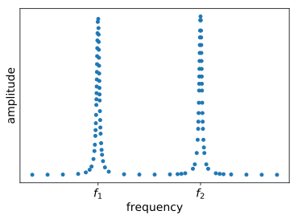
Adaptive
Adaptive
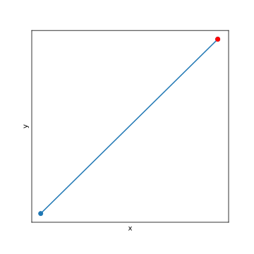
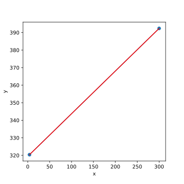
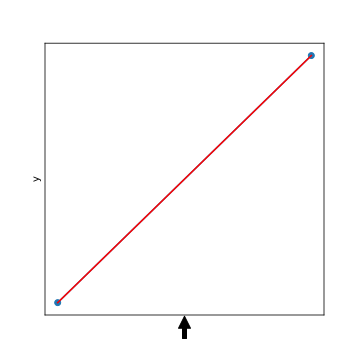
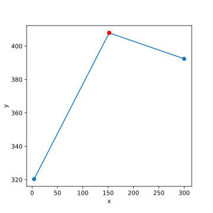
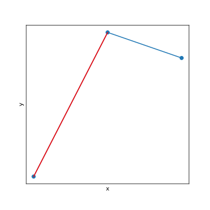
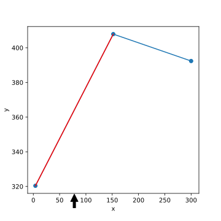
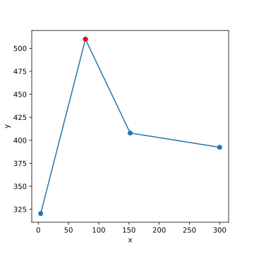
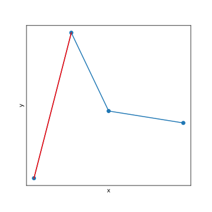
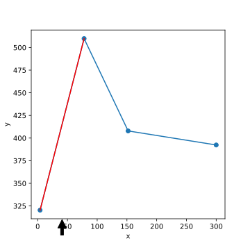
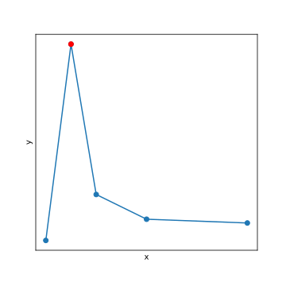
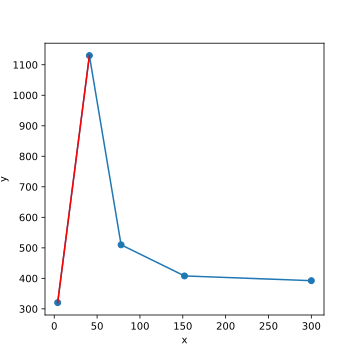
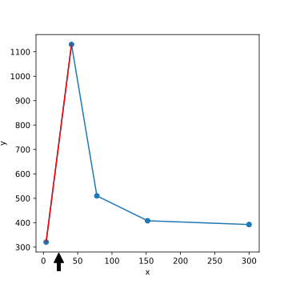
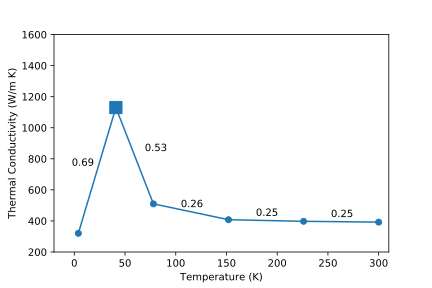

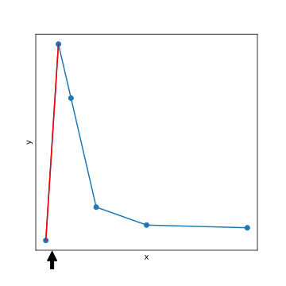
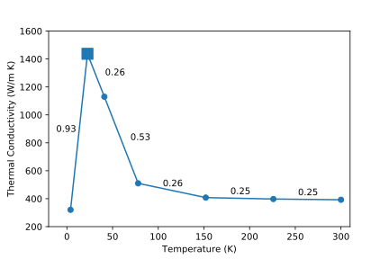
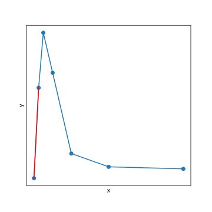
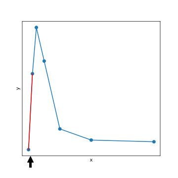
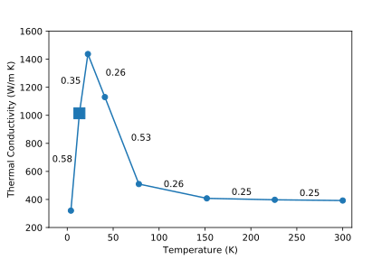
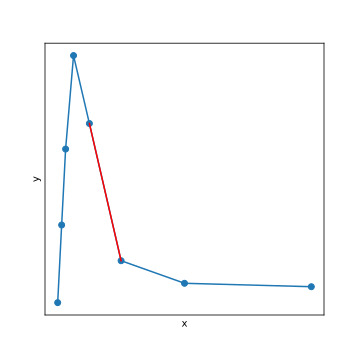
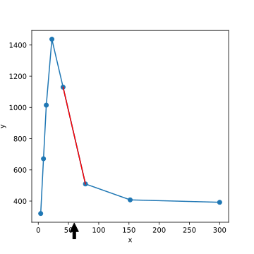
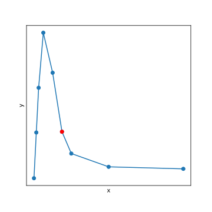
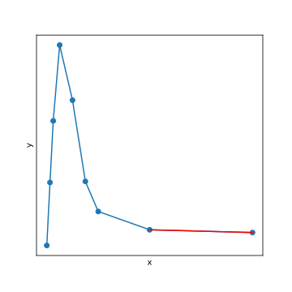
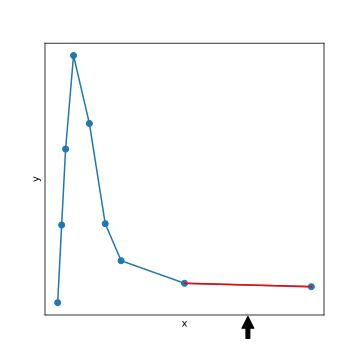
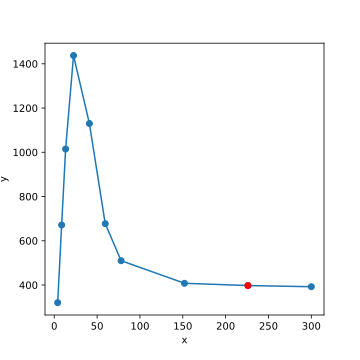
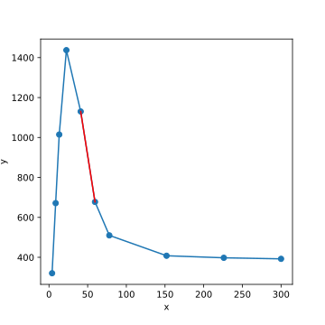
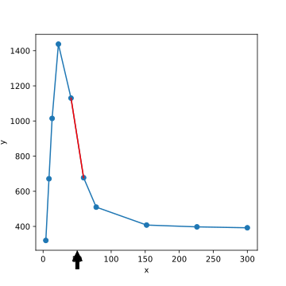

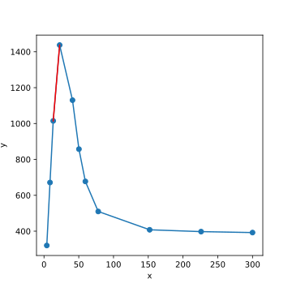
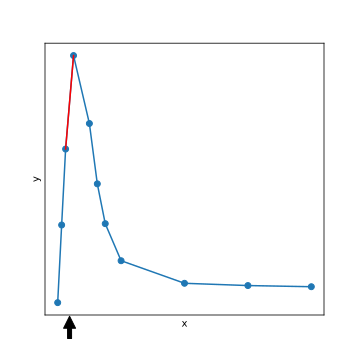
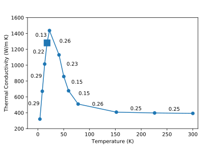
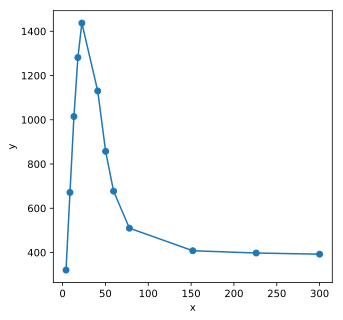
Adaptive
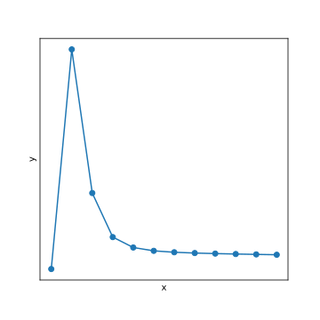
Homogeneous
Adaptive
Outline
A multi-dimensional adaptive sampling algorithm and its application to Fermi surfaces
Adaptive 2D
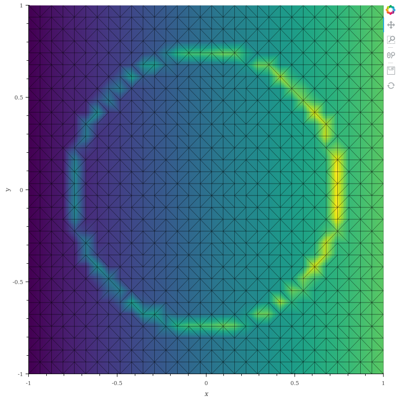
Homogeneous
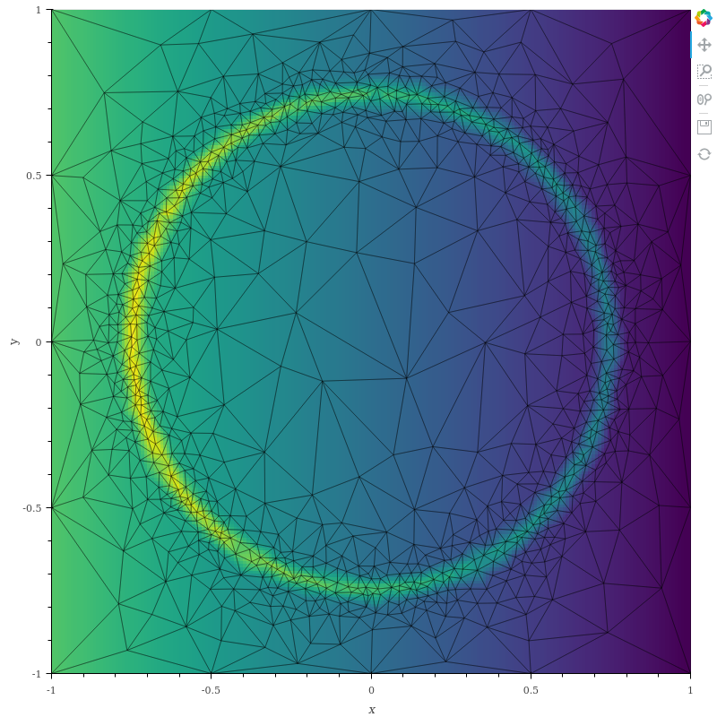
Adaptive
Adaptive
Existing implementation
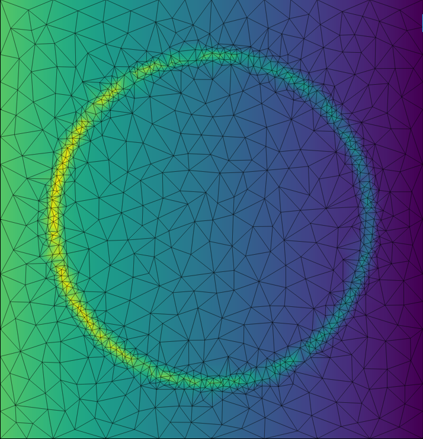
Area as loss
Problems with length as loss
- Small features
- Skipping peaks
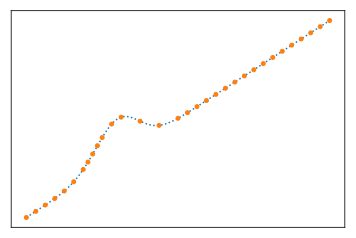
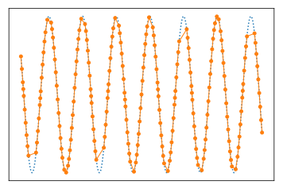
Line simplification
Visvalingam-Whyatt algorithm
Loss function in N dimensions
Improvement on: small features
Length as loss
Curvature as loss
Improvement on: peaks
Length as loss

Curvature as loss
Error comparison
Error reduced 6x
Error comparison
Error reduced 20x
Error comparison
Error reduced 2x
Outline
A multi-dimensional adaptive sampling algorithm and its application to Fermi surfaces
Band structure
1D crystal
Fermi surface
Fermi surface of gold
Image from T. Li & W. Schroeder (2007)
Modified adaptive sampling
Fermi surface simple cubic
2.8x more triangles
Fermi surface simple cubic
Fermi surface FCC
1.9x more triangles
Fermi surface hexagonal
2.3x more triangles
Conclusion
- Smoother/more accurate plots
- Higher resolution Fermi surface
Future work
- Faster implementation (C++ instead of Python)
- Higher order interpolation
- Anisotropic triangulations
Image from Huang, Kamenski & Lang (2010)
A multi-dimensional adaptive sampling algorithm and its application to Fermi surfaces
Jorn Hoofwijk
4396499
Supervisors
Dr. Anton Akhmerov
Dr. ir. Dennis den Ouden-van der Horst
Committee
Dr. Michael Wimmer
Dr. ir. Wolter Groenevelt
Error comparison
Error increased 1.14x
Fermi surface BCC
1.3x more triangles
Modified adaptive sampling